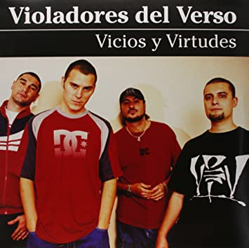

Violadores del Verso es un grupo de rap español cuyos miembros son: Kase.O, Lírico, SHO-HAI y R de Rumba, todos ellos nacidos en Zaragoza. Son considerados un referente en el rap español, y uno de los mejores grupos de rap de habla hispana de la historia. Sus discos Genios (1999) y Vivir para contarlo (2006) aparecen siempre en las listas de mejores discos de rap español. Violadores del Verso ganó el disco de oro por Vivir para contarlo (2006), y junto con SFDK son los únicos grupos de rap español que hasta la fecha han conseguido ganar un disco de oro.
La primera referencia que existe de los cuatro, colaborando juntos y autodenominándose Violadores del Verso, ocurre en la maqueta de Gangsta Squad [formada por Lírico y Brutal (productor y DJ) "Es tan solo un aviso"], aunque ya existían, en la segunda maqueta de Kase.O y más tarde en la de Bufank [formada por Juez (productor), R de Rumba (productor y DJ) y Hate (o Sho Hai)] colaboraciones de los que serían los componentes de Violadores del Verso.
En 1998 aparece su primer trabajo profesional, eran 5 miembros, entre ellos Brutal (productor y DJ), hermano de Kase.O, que participaba ejerciendo de dj. El trabajo fue un EP de 6 cortes con el título de "Violadores del Verso". En este disco se dan las primeras y únicas producciones conocidas de Lírico. Tiene como colaborador a Fran Fuethefirst. Ese mismo año se editó el maxi Violadores del Verso presentan a Kase-O en: Mierda. Este disco contiene dos temas y sus respectivas instrumentales. Incluye el polémico tema: "Mierda" que concluyó el famoso "beef" entre Kase.O y Metro (del grupo Geronación). Es este disco, aunque con el nombre de Violadores del Verso, solo participan Kase.O y R de Rumba, sin contar un par de palabras que dicen Hate y Lírico en los dos temas.
En 1999 se publicó su primer LP como grupo, Genios, en el que Brutal ya había abandonado el grupo (actualmente ayuda al grupo en sus proyectos además de ser un empleado en cuanto a la creación de los discos), un disco que revolucionó el panorama nacional y les puso como grupo de referencia del rap español. Destaca la colaboración del estadounidense Jeru The Damaja en el tema "Solo Quedar Consuelo". El segundo tema del disco, "Máximo exponente" fue el sencillo de él se realizó el primer videoclip del grupo.
En 2001 publicaron dos trabajos con el nombre de Doble V. Primero el maxi sencillo Atrás, con tres temas inéditos. Del tema que da título al disco se grabó el segundo videoclip del grupo. También en este año, mezclan su álbum debut y su maxi Mierda para crear un disco con una duración de un LP: Violadores Del Verso + Kase.O Mierda. Ese mismo año, apareció el LP Vicios y Virtudes, con el que se consagraron como uno de los grupos más importantes del rap en español. El sencillo del disco de nuevo tenía el mismo nombre del disco y dio lugar al tercer videoclip.
Debido a problemas legales con una marca de whisky volvieron a utilizar su nombre original Violadores del Verso y a mediados de 2002, de nuevo con el nombre original, publicaron un EP, titulado Tú eres alguien/Bombo Clap, que incluía dos temas nuevos: un remix de "La ciudad nunca duerme" y las canciones de un concierto realizado en la sala Aqualung de Madrid. El disco se incluía junto con el DVD de dicho concierto. De este modo, Violadores del Verso se convertía en el primer grupo de rap español en editar un video de uno de sus conciertos. Cuatro años más tarde, en mayo de 2006, presentaron Vivir para contarlo/Haciendo lo nuestro, un maxisingle adelanto de su LP Vivir para contarlo. Este maxi tiene dos temas nuevos y el remix de uno de ellos, además de sus instrumentales correspondientes. Cuenta con la colaboración de Fran Fuethefirst, miembro de Cloaka Company. Este maxi se situó como número 1 en ventas durante varias semanas y el sencillo más vendido del año 2006 ya que unos días vendió más de 18.000 copias.
Su tercer LP, Vivir para contarlo, que salió el 2 de noviembre de 2006, ha sido grabado y mezclado en los estudios Rap Solo por R de Rumba y masterizado en Nueva York en los estudios Master Disk por el ingeniero de sonido Tony Dawsey. Lleva por nombre el título de la primera canción del maxi sencillo. El disco se pudo escuchar íntegro en la página de la MTV de España, ya que el grupo lo colgó en la red, lo que provocó que circulase por Internet en las redes P2P una semana antes de su lanzamiento. Con este disco consiguieron vender más de 60.000 copias, por lo que consiguieron el disco de oro en solo 6 días, llegar al número uno en la lista de ventas en España6 además de ser nominados para la XI Edición de los Premios de la Música en la categoría de mejor álbum de hip-hop. Premio que consiguieron compitiendo con La Excepción y Haze. Sin embargo, ninguno de los componentes del grupo fue a recoger el galardón, ni siquiera alguien en su nombre.8 También el grupo zaragozano ganó el premio 'Best Spanish Act' en los premios europeos de la MTV celebrados el 1 de noviembre de 2007 en Münich, del cual los telespectadores del canal de televisión musical pudieron votar a través de la página web del mismo.
En el año 2008 la editorial "Zona de Obras" publicó un libro sobre el grupo, llamado "Los hijos secretos del funk. Conversaciones con Violadores del Verso". Una charla-entrevista en la que los miembros hablan sobre su historia, trabajo, recuerdos, etc.
Este mismo año colaboraron en el último disco Mala Sangre de Soziedad Alkoholika. Concretamente en la remezcla de la canción "Política del miedo", cuya letra fue compuesta por Violadores del Verso. El grupo zaragozano ha mostrado en repetidas ocasiones su apoyo a Soziedad Alkoholika, denunciando en sus conciertos la persecución que, según ellos, se ha llevado contra el grupo vasco, e invitándolos a tocar en alguna de sus actuaciones. El 10 de junio de 2011 el grupo anuncia haber dado el último concierto juntos por unos años, con la intención de concentrarse en respectivos trabajos en solitario. Sho Hai había editado en febrero de 2011 el disco "Doble vida" e iniciado la gira correspondiente, Kase-O estaba ultimando el disco "Kase O Jazz Magnetism" que vería la luz el 5 de diciembre de 2011 con gira oficial preparada para el 2012, Lírico estaba también comenzando a trabajar en su proyecto en solitario, el cual se titula "Un antes y un después", que vio la luz a finales de 2012. Pese a que muchos seguidores temían una separación final del grupo, Kase-O ha declarado que tras satisfacer las necesidades personales, se pondrán con el mejor disco de Violadores del Verso y que el grupo es de por vida.10 Tras realizar la gira de Jazz Magnetism, Kase-O ha declaró que comenzaría a realizar su próximo disco de rap en solitario, que ha visto la luz en septiembre de 2016 titulado "El Círculo", con colaboraciones varias como la de Najwa Nimri, Xhelazz y los propios Violadores del Verso. Además, gracias al disco Jazz Magnetism de Kase-O, este se llevó el premio al mejor álbum y al mejor grupo en los premios de la música aragonesa. Por su parte, Sho Hai también se llevó el premio a la mejor canción por "Ella".
|
| Artista | Trabajos |
|---|---|
| R de Rumba |
|
| Sho Hai |
|
| Kase.O |
|
| Lírico |
|